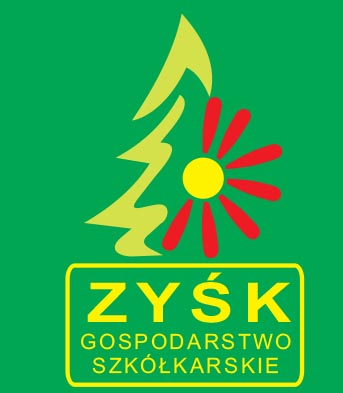

Jeżeli masz pytanie odnośnie naszej oferty, chcesz sprawdzić dostępność poszczególnych odmian czy gatunków – zadzwoń, napisz bądź wyślij mail.
Gospodarstwo szkółkarskie Zyśk
11-710 Piecki
Zwycięstwa 53a
Tel: 502 872 393
Mail: info@szkolkazysk.pl
Poniedziałek – Piątek: 9-18
Soboty: 9-15
